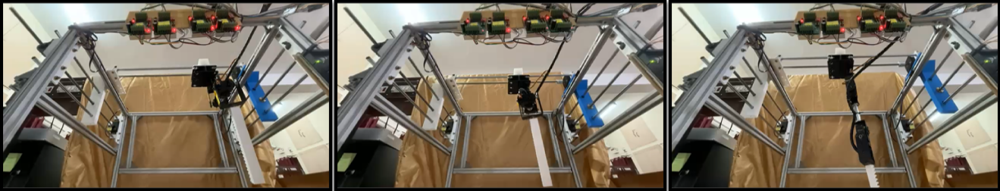
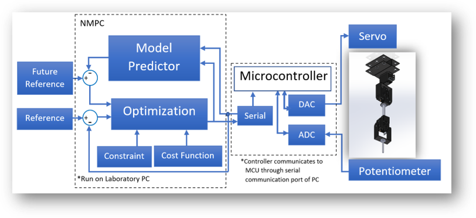
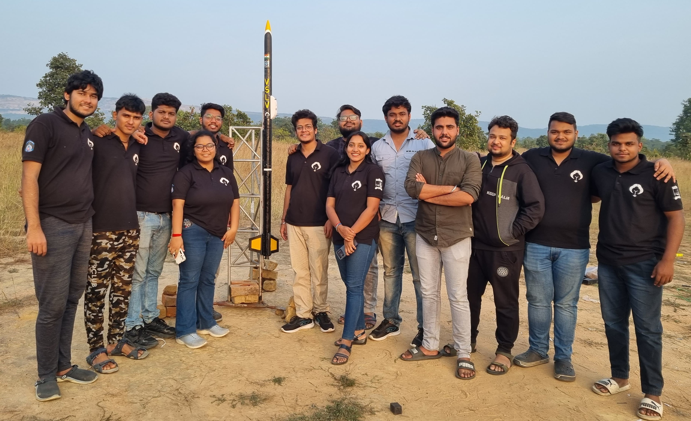

Robotic manipulators used in precision scanning, laboratory automation, and targeted positioning require accurate control of both translational and angular motion.
Conventional Cartesian gantry systems provide large workspace coverage but offer limited orientation control,
whereas standalone articulated robotic arms provide greater dexterity but are often restricted by their workspace and mechanical configuration.
To address these limitations, a hybrid gantry–robotic manipulator was developed. The system integrates a two-degree-of-freedom (2-DOF) Cartesian gantry with a three-degree-of-freedom (3-DOF) inverted robotic arm.
The resulting architecture combines large-area planar positioning with localized angular and vertical manipulation.
The primary objective of this work was to investigate the application of Nonlinear Model Predictive Control (NMPC) for accurate trajectory tracking of the articulated robotic arm.
The study involved developing the robot's kinematic and dynamic models, formulating a constrained nonlinear optimization problem, implementing the controller on hardware, and experimentally evaluating its tracking performance.
The developed platform consists of two interconnected subsystems. The Cartesian gantry provides X–Y translational motion parallel to the operating surface, while the inverted robotic arm provides yaw–pitch–pitch articulation through three independently controlled servo joints. The gantry is actuated using three NEMA 17 stepper motors, with two motors synchronized along the X-axis and one motor driving the Y-axis. Its positioning system operates in open-loop mode for the present study. The articulated arm is mounted on an elevated platform and employs three MG995 servo motors. The first servo controls the base rotation, while the second and third servos control the shoulder and elbow joints, respectively. This arrangement provides vertical reach and end-effector orientation control within the gantry workspace. The hybrid configuration was designed to overcome the limitations of conventional positioning systems by combining wide-area translational movement with localized dexterous manipulation. Potential applications include ultrasonic beam characterization, hydrophone scanning, acoustic focal alignment, surgical tool positioning, and precision inspection.
The first stage of controller development involved establishing the relationship between joint-space coordinates and Cartesian end-effector positions. Forward kinematics was primarily used to evaluate Cartesian tracking errors during controller optimization, while inverse kinematics provided feasible initial joint configurations and reference transformations. Accurate dynamic modelling is particularly important for an inverted robotic configuration because gravitational loading, inertial coupling, and nonlinear joint interactions significantly influence the system response.
Unlike conventional PID control, which primarily uses instantaneous tracking errors to determine the control action, NMPC predicts the future behaviour of a nonlinear system over a finite prediction horizon. At every sampling instant, the controller solves a constrained optimization problem using the dynamic model, reference trajectory, and actuator limitations. Only the first optimized control action is applied to the physical system. The prediction horizon is then shifted forward, and the optimization is repeated using updated feedback measurements. This process is known as receding-horizon control. The primary advantage of this approach is its ability to incorporate nonlinear dynamics and actuator constraints directly into the optimization process, making it particularly suitable for robotic manipulators with coupled joints and gravity-dependent motion.
Following the mathematical formulation, the NMPC controller was integrated with the physical robotic arm. The optimization algorithm operated on a local computing platform, while a microcontroller facilitated communication with the servo actuators and position feedback system. The control architecture consisted of a model predictor, optimization module, reference trajectory generator, and feedback interface. The microcontroller communicated with the computing platform through a serial interface, enabling the transmission of control commands and acquisition of feedback measurements.

The NMPC algorithm was executed at a target update frequency of approximately 20 Hz. The feedback loop continuously updated the estimated joint positions, compared them with the desired reference trajectories, and generated new optimized control commands. This implementation allowed the nonlinear predictive controller to operate on a physical robotic system rather than remaining restricted to numerical simulation.
The developed hybrid gantry–robotic manipulator demonstrates the feasibility of implementing nonlinear predictive control on a research-scale robotic platform using relatively low-cost hardware. By integrating a Cartesian positioning system with an articulated inverted robotic arm, the architecture provides both large-area workspace coverage and localized orientation control. The experimental results establish the feasibility of real-time NMPC implementation at approximately 20 Hz, although the measured tracking errors indicate considerable scope for further improvement. Future work will focus on refining the dynamic model, improving joint-position feedback, incorporating actuator calibration and parameter estimation, and optimizing the computational efficiency of the prediction algorithm. The platform provides a foundation for developing automated scanning and precision positioning systems, particularly for ultrasonic beam characterization and hydrophone-based acoustic field mapping. Further integration of sensor feedback, adaptive modelling, and advanced trajectory planning could extend the system towards autonomous scanning and closed-loop experimental characterization.
